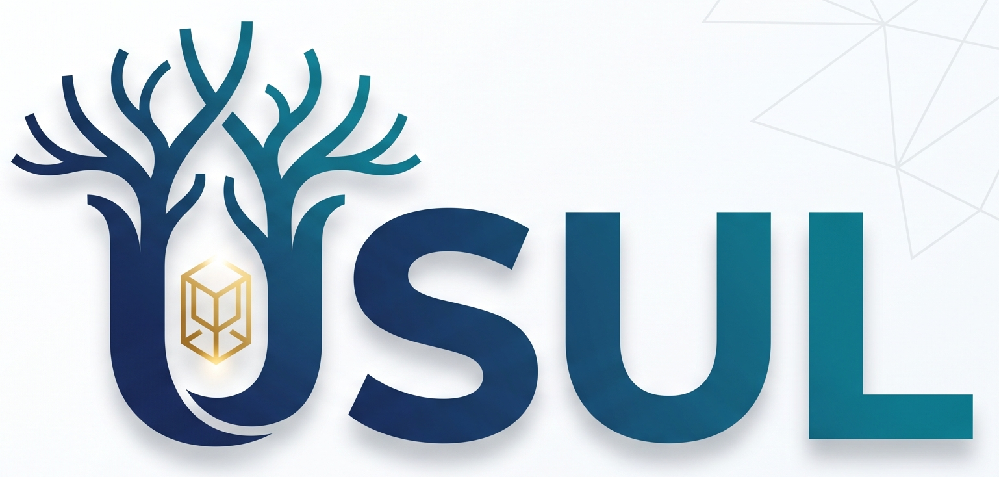

USUL · Commercial Prototype · Demo & Testing · AI demonstration data — not scholar-certified

USUL is a separate commercial prototype. It is built by the Gold Ark
team and cross-links into the Gold Ark Library, but it is a product of its
own — for demonstration and testing only.
USUL is not part of the Gold Ark Library subscription ($100/yr).
Sign-in is required. Content is AI-generated demonstration data —
not scholar-certified — independently verify.
Links marked ↗ leave USUL and open the Gold Ark Library in a new tab.
Leaving USUL
This opens the Gold Ark Library in a new tab. The Library is the free
scholarly app; USUL stays open here. USUL is a separate commercial
prototype and is not part of the Library subscription.